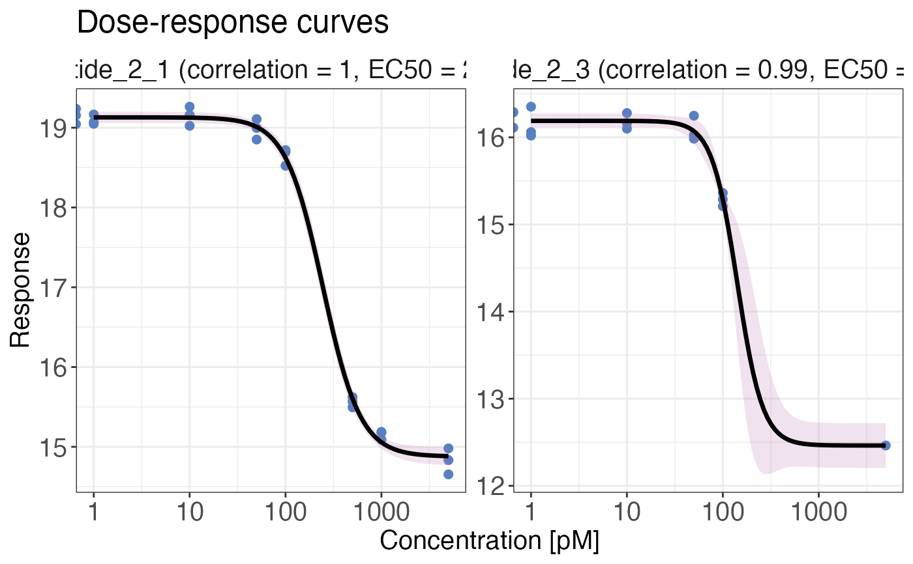

Function for plotting four-parameter dose response curves for each group (precursor, peptide or
protein), based on output from fit_drc_4p function.
drc_4p_plot(
data,
grouping,
response,
dose,
targets,
unit = "uM",
y_axis_name = "Response",
facet = TRUE,
scales = "free",
x_axis_scale_log10 = TRUE,
export = FALSE,
export_name = "dose-response_curves"
)a data frame that is obtained by calling the fit_drc_4p function.
a character column in the data data frame that contains the precursor,
peptide or protein identifiers.
a numeric column in a nested data frame called plot_points that is part
of the data data frame. This column contains the response values, e.g. log2 transformed
intensities.
a numeric column in a nested data frame called plot_points that is part
of the data data frame. This column contains the dose values, e.g. the treatment
concentrations.
a character vector that specifies the names of the precursors, peptides or
proteins (depending on grouping) that should be plotted. This can also be "all"
if plots for all curve fits should be created.
a character value specifying the unit of the concentration.
a character value specifying the name of the y-axis of the plot.
a logical value that indicates if plots should be summarised into facets of 20 plots. This is recommended for many plots.
a character value that specifies if the scales in faceted plots (if more than one
target was provided) should be "free" or "fixed".
a logical value that indicates if the x-axis scale should be log10 transformed.
a logical value that indicates if plots should be exported as PDF. The output
directory will be the current working directory. The name of the file can be chosen using the
export_name argument. If only one target is selected and export = TRUE,
the plot is exported and in addition returned in R.
a character value providing the name of the exported file if
export = TRUE.
If targets = "all" a list containing plots for every unique identifier in the
grouping variable is created. Otherwise a plot for the specified targets is created with
maximally 20 facets.
# \donttest{
set.seed(123) # Makes example reproducible
# Create example data
data <- create_synthetic_data(
n_proteins = 2,
frac_change = 1,
n_replicates = 3,
n_conditions = 8,
method = "dose_response",
concentrations = c(0, 1, 10, 50, 100, 500, 1000, 5000),
additional_metadata = FALSE
)
# Perform dose response curve fit
drc_fit <- fit_drc_4p(
data = data,
sample = sample,
grouping = peptide,
response = peptide_intensity_missing,
dose = concentration,
retain_columns = c(protein)
)
str(drc_fit)
#> tibble [39 × 18] (S3: tbl_df/tbl/data.frame)
#> $ rank : num [1:39] 1 2 3 4 NA NA NA NA NA NA ...
#> $ protein : chr [1:39] "protein_2" "protein_2" "protein_1" "protein_2" ...
#> $ peptide : chr [1:39] "peptide_2_1" "peptide_2_3" "peptide_1_1" "peptide_2_2" ...
#> $ hill_coefficient : num [1:39] 2.23 3.28 1.95 -3.31 -4.79 ...
#> $ min_model : num [1:39] 14.9 12.5 16 19.1 17.4 ...
#> $ max_model : num [1:39] 19.1 16.2 17.1 19.8 17.9 ...
#> $ ec_50 : num [1:39] 245.4 141.8 94.3 629.3 202.4 ...
#> $ correlation : num [1:39] 0.999 0.994 0.967 0.928 0.77 ...
#> $ pval : num [1:39] 1.13e-29 8.42e-15 1.58e-14 6.63e-11 1.75e-05 ...
#> $ plot_curve :List of 39
#> ..$ : tibble [100 × 4] (S3: tbl_df/tbl/data.frame)
#> .. ..$ dose : num [1:100] 5000 4588 4210 3863 3544 ...
#> .. ..$ Prediction: num [1:100] 14.9 14.9 14.9 14.9 14.9 ...
#> .. ..$ Lower : num [1:100] 14.8 14.8 14.8 14.8 14.8 ...
#> .. ..$ Upper : num [1:100] 15 15 15 15 15 ...
#> ..$ : tibble [100 × 4] (S3: tbl_df/tbl/data.frame)
#> .. ..$ dose : num [1:100] 5000 4588 4210 3863 3544 ...
#> .. ..$ Prediction: num [1:100] 12.5 12.5 12.5 12.5 12.5 ...
#> .. ..$ Lower : num [1:100] 12.2 12.2 12.2 12.2 12.2 ...
#> .. ..$ Upper : num [1:100] 12.7 12.7 12.7 12.7 12.7 ...
#> ..$ : tibble [100 × 4] (S3: tbl_df/tbl/data.frame)
#> .. ..$ dose : num [1:100] 5000 4588 4210 3863 3544 ...
#> .. ..$ Prediction: num [1:100] 16 16 16 16 16 ...
#> .. ..$ Lower : num [1:100] 15.9 15.9 15.9 15.9 15.9 ...
#> .. ..$ Upper : num [1:100] 16.1 16.1 16.1 16.1 16.1 ...
#> ..$ : tibble [100 × 4] (S3: tbl_df/tbl/data.frame)
#> .. ..$ dose : num [1:100] 5000 4588 4210 3863 3544 ...
#> .. ..$ Prediction: num [1:100] 19.8 19.8 19.8 19.8 19.8 ...
#> .. ..$ Lower : num [1:100] 19.7 19.7 19.7 19.7 19.7 ...
#> .. ..$ Upper : num [1:100] 19.9 19.9 19.9 19.9 19.9 ...
#> ..$ : tibble [100 × 4] (S3: tbl_df/tbl/data.frame)
#> .. ..$ dose : num [1:100] 5000 4588 4210 3863 3544 ...
#> .. ..$ Prediction: num [1:100] 17.9 17.9 17.9 17.9 17.9 ...
#> .. ..$ Lower : num [1:100] 17.7 17.7 17.7 17.7 17.7 ...
#> .. ..$ Upper : num [1:100] 18.1 18.1 18.1 18.1 18.1 ...
#> ..$ : tibble [100 × 4] (S3: tbl_df/tbl/data.frame)
#> .. ..$ dose : num [1:100] 5000 4588 4210 3863 3544 ...
#> .. ..$ Prediction: num [1:100] 14.8 14.8 14.8 14.8 14.8 ...
#> .. ..$ Lower : num [1:100] 14.7 14.7 14.7 14.7 14.7 ...
#> .. ..$ Upper : num [1:100] 15 15 15 15 15 ...
#> ..$ : tibble [100 × 4] (S3: tbl_df/tbl/data.frame)
#> .. ..$ dose : num [1:100] 5000 4588 4210 3863 3544 ...
#> .. ..$ Prediction: num [1:100] 15 15 15 15 15 ...
#> .. ..$ Lower : num [1:100] 14.9 14.9 14.9 14.9 14.9 ...
#> .. ..$ Upper : num [1:100] 15.1 15.1 15.1 15.1 15.1 ...
#> ..$ : tibble [100 × 4] (S3: tbl_df/tbl/data.frame)
#> .. ..$ dose : num [1:100] 5000 4588 4210 3863 3544 ...
#> .. ..$ Prediction: num [1:100] 16.8 16.8 16.8 16.8 16.8 ...
#> .. ..$ Lower : num [1:100] 16.5 16.5 16.5 16.5 16.4 ...
#> .. ..$ Upper : num [1:100] 17.1 17.1 17.1 17.1 17.1 ...
#> ..$ : tibble [100 × 4] (S3: tbl_df/tbl/data.frame)
#> .. ..$ dose : num [1:100] 5000 4588 4210 3863 3544 ...
#> .. ..$ Prediction: num [1:100] 15.7 15.7 15.7 15.7 15.7 ...
#> .. ..$ Lower : num [1:100] NA NA NA NA NA NA NA NA NA NA ...
#> .. ..$ Upper : num [1:100] NA NA NA NA NA NA NA NA NA NA ...
#> ..$ : tibble [100 × 4] (S3: tbl_df/tbl/data.frame)
#> .. ..$ dose : num [1:100] 5000 4588 4210 3863 3544 ...
#> .. ..$ Prediction: num [1:100] 16.5 16.5 16.5 16.5 16.5 ...
#> .. ..$ Lower : num [1:100] 16.4 16.4 16.4 16.4 16.4 ...
#> .. ..$ Upper : num [1:100] 16.6 16.6 16.6 16.6 16.6 ...
#> ..$ : tibble [100 × 4] (S3: tbl_df/tbl/data.frame)
#> .. ..$ dose : num [1:100] 5000 4588 4210 3863 3544 ...
#> .. ..$ Prediction: num [1:100] 15.8 15.8 15.8 15.8 15.8 ...
#> .. ..$ Lower : num [1:100] 15.6 15.6 15.6 15.6 15.6 ...
#> .. ..$ Upper : num [1:100] 16 16 16 16 16 ...
#> ..$ : tibble [100 × 4] (S3: tbl_df/tbl/data.frame)
#> .. ..$ dose : num [1:100] 5000 4588 4210 3863 3544 ...
#> .. ..$ Prediction: num [1:100] 17.6 17.6 17.6 17.6 17.6 ...
#> .. ..$ Lower : num [1:100] 17.5 17.5 17.5 17.5 17.5 ...
#> .. ..$ Upper : num [1:100] 17.7 17.7 17.7 17.7 17.7 ...
#> ..$ : tibble [100 × 4] (S3: tbl_df/tbl/data.frame)
#> .. ..$ dose : num [1:100] 5000 4588 4210 3863 3544 ...
#> .. ..$ Prediction: num [1:100] 16.4 16.4 16.4 16.4 16.4 ...
#> .. ..$ Lower : num [1:100] 16.2 16.2 16.2 16.2 16.2 ...
#> .. ..$ Upper : num [1:100] 16.6 16.6 16.6 16.6 16.6 ...
#> ..$ : tibble [100 × 4] (S3: tbl_df/tbl/data.frame)
#> .. ..$ dose : num [1:100] 5000 4588 4210 3863 3544 ...
#> .. ..$ Prediction: num [1:100] 14.5 14.5 14.5 14.5 14.5 ...
#> .. ..$ Lower : num [1:100] 14.3 14.3 14.3 14.3 14.3 ...
#> .. ..$ Upper : num [1:100] 14.8 14.8 14.8 14.8 14.8 ...
#> ..$ : tibble [100 × 4] (S3: tbl_df/tbl/data.frame)
#> .. ..$ dose : num [1:100] 5000 4588 4210 3863 3544 ...
#> .. ..$ Prediction: num [1:100] 16.6 16.6 16.6 16.6 16.6 ...
#> .. ..$ Lower : num [1:100] 16.4 16.4 16.4 16.4 16.4 ...
#> .. ..$ Upper : num [1:100] 16.8 16.8 16.8 16.8 16.8 ...
#> ..$ : tibble [100 × 4] (S3: tbl_df/tbl/data.frame)
#> .. ..$ dose : num [1:100] 5000 4588 4210 3863 3544 ...
#> .. ..$ Prediction: num [1:100] 16.6 16.6 16.6 16.6 16.6 ...
#> .. ..$ Lower : num [1:100] 16.4 16.4 16.4 16.4 16.4 ...
#> .. ..$ Upper : num [1:100] 16.8 16.8 16.8 16.8 16.7 ...
#> ..$ : tibble [100 × 4] (S3: tbl_df/tbl/data.frame)
#> .. ..$ dose : num [1:100] 5000 4588 4210 3863 3544 ...
#> .. ..$ Prediction: num [1:100] 16.5 16.5 16.5 16.5 16.5 ...
#> .. ..$ Lower : num [1:100] NA NA NA NA NA NA NA NA NA NA ...
#> .. ..$ Upper : num [1:100] NA NA NA NA NA NA NA NA NA NA ...
#> ..$ : tibble [100 × 4] (S3: tbl_df/tbl/data.frame)
#> .. ..$ dose : num [1:100] 5000 4588 4210 3863 3544 ...
#> .. ..$ Prediction: num [1:100] 19.9 19.9 19.9 19.9 19.9 ...
#> .. ..$ Lower : num [1:100] 19.8 19.8 19.8 19.8 19.8 ...
#> .. ..$ Upper : num [1:100] 19.9 19.9 19.9 19.9 19.9 ...
#> ..$ : tibble [100 × 4] (S3: tbl_df/tbl/data.frame)
#> .. ..$ dose : num [1:100] 5000 4588 4210 3863 3544 ...
#> .. ..$ Prediction: num [1:100] 17.9 17.9 17.9 17.9 17.9 ...
#> .. ..$ Lower : num [1:100] 17.6 17.6 17.6 17.6 17.6 ...
#> .. ..$ Upper : num [1:100] 18.1 18.1 18.1 18.1 18.1 ...
#> ..$ : tibble [100 × 4] (S3: tbl_df/tbl/data.frame)
#> .. ..$ dose : num [1:100] 5000 4588 4210 3863 3544 ...
#> .. ..$ Prediction: num [1:100] 16.5 16.5 16.5 16.5 16.5 ...
#> .. ..$ Lower : num [1:100] 16.2 16.2 16.2 16.2 16.2 ...
#> .. ..$ Upper : num [1:100] 16.8 16.8 16.8 16.7 16.7 ...
#> ..$ : tibble [100 × 4] (S3: tbl_df/tbl/data.frame)
#> .. ..$ dose : num [1:100] 5000 4588 4210 3863 3544 ...
#> .. ..$ Prediction: num [1:100] 15 15 15 15 15 ...
#> .. ..$ Lower : num [1:100] NA NA NA NA NA NA NA NA NA NA ...
#> .. ..$ Upper : num [1:100] NA NA NA NA NA NA NA NA NA NA ...
#> ..$ : tibble [100 × 4] (S3: tbl_df/tbl/data.frame)
#> .. ..$ dose : num [1:100] 5000 4588 4210 3863 3544 ...
#> .. ..$ Prediction: num [1:100] 16 16 16 16 16 ...
#> .. ..$ Lower : num [1:100] 15.7 15.7 15.7 15.7 15.7 ...
#> .. ..$ Upper : num [1:100] 16.4 16.4 16.4 16.4 16.4 ...
#> ..$ : tibble [100 × 4] (S3: tbl_df/tbl/data.frame)
#> .. ..$ dose : num [1:100] 5000 4588 4210 3863 3544 ...
#> .. ..$ Prediction: num [1:100] 18.4 18.4 18.4 18.4 18.4 ...
#> .. ..$ Lower : num [1:100] 18.4 18.4 18.4 18.4 18.4 ...
#> .. ..$ Upper : num [1:100] 18.5 18.5 18.5 18.5 18.5 ...
#> ..$ : tibble [100 × 4] (S3: tbl_df/tbl/data.frame)
#> .. ..$ dose : num [1:100] 5000 4588 4210 3863 3544 ...
#> .. ..$ Prediction: num [1:100] 14.6 14.6 14.6 14.6 14.6 ...
#> .. ..$ Lower : num [1:100] 14.3 14.3 14.3 14.3 14.3 ...
#> .. ..$ Upper : num [1:100] 14.9 14.9 14.9 14.9 14.9 ...
#> ..$ : tibble [100 × 4] (S3: tbl_df/tbl/data.frame)
#> .. ..$ dose : num [1:100] 5000 4588 4210 3863 3544 ...
#> .. ..$ Prediction: num [1:100] 15.6 15.6 15.6 15.6 15.6 ...
#> .. ..$ Lower : num [1:100] 15.4 15.4 15.4 15.4 15.4 ...
#> .. ..$ Upper : num [1:100] 15.7 15.7 15.7 15.7 15.7 ...
#> ..$ : tibble [100 × 4] (S3: tbl_df/tbl/data.frame)
#> .. ..$ dose : num [1:100] 5000 4588 4210 3863 3544 ...
#> .. ..$ Prediction: num [1:100] 16.2 16.2 16.2 16.2 16.2 ...
#> .. ..$ Lower : num [1:100] 16 16 16 16 16 ...
#> .. ..$ Upper : num [1:100] 16.5 16.5 16.5 16.4 16.4 ...
#> ..$ : tibble [100 × 4] (S3: tbl_df/tbl/data.frame)
#> .. ..$ dose : num [1:100] 5000 4588 4210 3863 3544 ...
#> .. ..$ Prediction: num [1:100] 17.5 17.5 17.5 17.5 17.5 ...
#> .. ..$ Lower : num [1:100] 17.4 17.4 17.4 17.4 17.4 ...
#> .. ..$ Upper : num [1:100] 17.7 17.7 17.7 17.7 17.7 ...
#> ..$ : tibble [100 × 4] (S3: tbl_df/tbl/data.frame)
#> .. ..$ dose : num [1:100] 5000 4588 4210 3863 3544 ...
#> .. ..$ Prediction: num [1:100] 17.3 17.3 17.3 17.3 17.3 ...
#> .. ..$ Lower : num [1:100] NA NA NA NA NA NA NA NA NA NA ...
#> .. ..$ Upper : num [1:100] NA NA NA NA NA NA NA NA NA NA ...
#> ..$ : tibble [100 × 4] (S3: tbl_df/tbl/data.frame)
#> .. ..$ dose : num [1:100] 5000 4588 4210 3863 3544 ...
#> .. ..$ Prediction: num [1:100] 17.5 17.5 17.5 17.5 17.5 ...
#> .. ..$ Lower : num [1:100] 17.4 17.4 17.4 17.4 17.4 ...
#> .. ..$ Upper : num [1:100] 17.6 17.6 17.6 17.6 17.6 ...
#> ..$ : tibble [100 × 4] (S3: tbl_df/tbl/data.frame)
#> .. ..$ dose : num [1:100] 5000 4588 4210 3863 3544 ...
#> .. ..$ Prediction: num [1:100] 15.1 15.1 15.1 15.1 15.1 ...
#> .. ..$ Lower : num [1:100] 14.9 14.9 14.9 14.9 14.9 ...
#> .. ..$ Upper : num [1:100] 15.3 15.3 15.3 15.3 15.3 ...
#> ..$ : tibble [100 × 4] (S3: tbl_df/tbl/data.frame)
#> .. ..$ dose : num [1:100] 5000 4588 4210 3863 3544 ...
#> .. ..$ Prediction: num [1:100] 14.5 14.5 14.5 14.5 14.5 ...
#> .. ..$ Lower : num [1:100] 14.4 14.4 14.4 14.4 14.4 ...
#> .. ..$ Upper : num [1:100] 14.6 14.6 14.6 14.6 14.6 ...
#> ..$ : tibble [100 × 4] (S3: tbl_df/tbl/data.frame)
#> .. ..$ dose : num [1:100] 5000 4588 4210 3863 3544 ...
#> .. ..$ Prediction: num [1:100] 15.6 15.6 15.6 15.6 15.6 ...
#> .. ..$ Lower : num [1:100] NA NA NA NA NA NA NA NA NA NA ...
#> .. ..$ Upper : num [1:100] NA NA NA NA NA NA NA NA NA NA ...
#> ..$ : tibble [100 × 4] (S3: tbl_df/tbl/data.frame)
#> .. ..$ dose : num [1:100] 5000 4588 4210 3863 3544 ...
#> .. ..$ Prediction: num [1:100] 15.2 15.2 15.2 15.2 15.2 ...
#> .. ..$ Lower : num [1:100] 14.9 14.9 14.9 14.9 14.9 ...
#> .. ..$ Upper : num [1:100] 15.5 15.5 15.5 15.5 15.5 ...
#> ..$ : tibble [100 × 4] (S3: tbl_df/tbl/data.frame)
#> .. ..$ dose : num [1:100] 5000 4588 4210 3863 3544 ...
#> .. ..$ Prediction: num [1:100] 17 17 17 17 17 ...
#> .. ..$ Lower : num [1:100] NA NA NA NA NA NA NA NA NA NA ...
#> .. ..$ Upper : num [1:100] NA NA NA NA NA NA NA NA NA NA ...
#> ..$ : tibble [100 × 4] (S3: tbl_df/tbl/data.frame)
#> .. ..$ dose : num [1:100] 5000 4588 4210 3863 3544 ...
#> .. ..$ Prediction: num [1:100] 15.8 15.8 15.8 15.8 15.8 ...
#> .. ..$ Lower : num [1:100] 15.5 15.5 15.5 15.5 15.5 ...
#> .. ..$ Upper : num [1:100] 16.1 16.1 16.1 16 16 ...
#> ..$ : tibble [100 × 4] (S3: tbl_df/tbl/data.frame)
#> .. ..$ dose : num [1:100] 5000 4588 4210 3863 3544 ...
#> .. ..$ Prediction: num [1:100] 15.3 15.3 15.3 15.3 15.3 ...
#> .. ..$ Lower : num [1:100] 15.3 15.3 15.3 15.3 15.3 ...
#> .. ..$ Upper : num [1:100] 15.4 15.4 15.4 15.4 15.4 ...
#> ..$ : tibble [100 × 4] (S3: tbl_df/tbl/data.frame)
#> .. ..$ dose : num [1:100] 5000 4588 4210 3863 3544 ...
#> .. ..$ Prediction: num [1:100] 18 18 18 18 18 ...
#> .. ..$ Lower : num [1:100] 17.9 17.9 17.9 17.9 17.9 ...
#> .. ..$ Upper : num [1:100] 18.2 18.2 18.2 18.2 18.2 ...
#> ..$ : tibble [100 × 4] (S3: tbl_df/tbl/data.frame)
#> .. ..$ dose : num [1:100] 5000 4588 4210 3863 3544 ...
#> .. ..$ Prediction: num [1:100] 17.2 17.2 17.2 17.2 17.2 ...
#> .. ..$ Lower : num [1:100] 17.1 17.1 17.1 17.1 17.1 ...
#> .. ..$ Upper : num [1:100] 17.3 17.3 17.3 17.3 17.3 ...
#> ..$ : tibble [100 × 4] (S3: tbl_df/tbl/data.frame)
#> .. ..$ dose : num [1:100] 5000 4588 4210 3863 3544 ...
#> .. ..$ Prediction: num [1:100] 15.8 15.8 15.8 15.8 15.8 ...
#> .. ..$ Lower : num [1:100] 15.8 15.8 15.8 15.8 15.8 ...
#> .. ..$ Upper : num [1:100] 15.9 15.9 15.9 15.9 15.9 ...
#> $ plot_points :List of 39
#> ..$ : tibble [24 × 2] (S3: tbl_df/tbl/data.frame)
#> .. ..$ peptide_intensity_missing: num [1:24] 19.2 18.9 19.1 19 18.7 ...
#> .. ..$ concentration : num [1:24] 0 50 50 50 100 100 100 500 500 500 ...
#> ..$ : tibble [16 × 2] (S3: tbl_df/tbl/data.frame)
#> .. ..$ peptide_intensity_missing: num [1:16] 16.3 16 16 16.2 15.3 ...
#> .. ..$ concentration : num [1:16] 0 50 50 50 100 100 100 0 5000 0 ...
#> ..$ : tibble [24 × 2] (S3: tbl_df/tbl/data.frame)
#> .. ..$ peptide_intensity_missing: num [1:24] 17.2 16.8 16.9 16.9 16.6 ...
#> .. ..$ concentration : num [1:24] 0 50 50 50 100 100 100 500 500 500 ...
#> ..$ : tibble [24 × 2] (S3: tbl_df/tbl/data.frame)
#> .. ..$ peptide_intensity_missing: num [1:24] 19.2 19.2 19.2 19.2 18.9 ...
#> .. ..$ concentration : num [1:24] 0 50 50 50 100 100 100 500 500 500 ...
#> ..$ : tibble [23 × 2] (S3: tbl_df/tbl/data.frame)
#> .. ..$ peptide_intensity_missing: num [1:23] 17.7 17.1 17.2 17.4 17.4 ...
#> .. ..$ concentration : num [1:23] 0 50 50 100 100 100 500 500 500 1000 ...
#> ..$ : tibble [17 × 2] (S3: tbl_df/tbl/data.frame)
#> .. ..$ peptide_intensity_missing: num [1:17] 15.3 15.2 15.1 14.8 14.8 ...
#> .. ..$ concentration : num [1:17] 0 50 50 100 100 100 500 1000 1000 1000 ...
#> ..$ : tibble [19 × 2] (S3: tbl_df/tbl/data.frame)
#> .. ..$ peptide_intensity_missing: num [1:19] 15.4 14.9 14.8 14.9 14.9 ...
#> .. ..$ concentration : num [1:19] 0 50 50 100 500 500 500 1000 1000 1000 ...
#> ..$ : tibble [23 × 2] (S3: tbl_df/tbl/data.frame)
#> .. ..$ peptide_intensity_missing: num [1:23] 17.5 17.1 17.3 17.1 17.2 ...
#> .. ..$ concentration : num [1:23] 0 50 50 50 100 100 100 500 500 500 ...
#> ..$ : tibble [22 × 2] (S3: tbl_df/tbl/data.frame)
#> .. ..$ peptide_intensity_missing: num [1:22] 16.1 15.5 15.8 15.7 15.3 ...
#> .. ..$ concentration : num [1:22] 0 50 50 50 100 100 100 500 500 500 ...
#> ..$ : tibble [23 × 2] (S3: tbl_df/tbl/data.frame)
#> .. ..$ peptide_intensity_missing: num [1:23] 16.5 16.8 16.2 16.8 16.2 ...
#> .. ..$ concentration : num [1:23] 50 50 50 100 100 100 500 500 500 1000 ...
#> ..$ : tibble [22 × 2] (S3: tbl_df/tbl/data.frame)
#> .. ..$ peptide_intensity_missing: num [1:22] 16.2 16.1 15.9 16.2 16.2 ...
#> .. ..$ concentration : num [1:22] 0 50 50 50 100 100 100 500 500 0 ...
#> ..$ : tibble [23 × 2] (S3: tbl_df/tbl/data.frame)
#> .. ..$ peptide_intensity_missing: num [1:23] 17.6 17.4 17.3 17.5 17.6 ...
#> .. ..$ concentration : num [1:23] 0 50 50 50 100 100 500 500 500 1000 ...
#> ..$ : tibble [24 × 2] (S3: tbl_df/tbl/data.frame)
#> .. ..$ peptide_intensity_missing: num [1:24] 16.3 16.8 16.8 17 16.5 ...
#> .. ..$ concentration : num [1:24] 0 50 50 50 100 100 100 500 500 500 ...
#> ..$ : tibble [17 × 2] (S3: tbl_df/tbl/data.frame)
#> .. ..$ peptide_intensity_missing: num [1:17] 14.7 14.9 14.5 14.4 15 ...
#> .. ..$ concentration : num [1:17] 50 50 50 100 100 500 500 500 1000 0 ...
#> ..$ : tibble [24 × 2] (S3: tbl_df/tbl/data.frame)
#> .. ..$ peptide_intensity_missing: num [1:24] 16.5 16.3 16.2 17 17 ...
#> .. ..$ concentration : num [1:24] 0 50 50 50 100 100 100 500 500 500 ...
#> ..$ : tibble [24 × 2] (S3: tbl_df/tbl/data.frame)
#> .. ..$ peptide_intensity_missing: num [1:24] 16.3 16.7 16 16.6 16.7 ...
#> .. ..$ concentration : num [1:24] 0 50 50 50 100 100 100 500 500 500 ...
#> ..$ : tibble [22 × 2] (S3: tbl_df/tbl/data.frame)
#> .. ..$ peptide_intensity_missing: num [1:22] 15.9 16.4 17.1 16.2 16.5 ...
#> .. ..$ concentration : num [1:22] 0 50 50 100 100 100 500 500 1000 0 ...
#> ..$ : tibble [24 × 2] (S3: tbl_df/tbl/data.frame)
#> .. ..$ peptide_intensity_missing: num [1:24] 20 19.9 19.8 20 20 ...
#> .. ..$ concentration : num [1:24] 0 50 50 50 100 100 100 500 500 500 ...
#> ..$ : tibble [24 × 2] (S3: tbl_df/tbl/data.frame)
#> .. ..$ peptide_intensity_missing: num [1:24] 17.7 17.9 18.1 18 18.1 ...
#> .. ..$ concentration : num [1:24] 0 50 50 50 100 100 100 500 500 500 ...
#> ..$ : tibble [23 × 2] (S3: tbl_df/tbl/data.frame)
#> .. ..$ peptide_intensity_missing: num [1:23] 16.1 16.3 16.1 16.7 15.9 ...
#> .. ..$ concentration : num [1:23] 0 50 50 50 100 100 100 500 500 500 ...
#> ..$ : tibble [21 × 2] (S3: tbl_df/tbl/data.frame)
#> .. ..$ peptide_intensity_missing: num [1:21] 14.9 15.5 15 15.3 15 ...
#> .. ..$ concentration : num [1:21] 50 50 50 100 100 100 500 500 1000 0 ...
#> ..$ : tibble [22 × 2] (S3: tbl_df/tbl/data.frame)
#> .. ..$ peptide_intensity_missing: num [1:22] 16 15.6 15.7 16.3 15.4 ...
#> .. ..$ concentration : num [1:22] 0 50 50 50 100 100 500 500 500 1000 ...
#> ..$ : tibble [24 × 2] (S3: tbl_df/tbl/data.frame)
#> .. ..$ peptide_intensity_missing: num [1:24] 18.6 18.3 18.6 18.6 18.5 ...
#> .. ..$ concentration : num [1:24] 0 50 50 50 100 100 100 500 500 500 ...
#> ..$ : tibble [18 × 2] (S3: tbl_df/tbl/data.frame)
#> .. ..$ peptide_intensity_missing: num [1:18] 14.6 14.6 14.6 14.4 14.3 ...
#> .. ..$ concentration : num [1:18] 50 50 100 100 500 500 1000 0 1000 1000 ...
#> ..$ : tibble [23 × 2] (S3: tbl_df/tbl/data.frame)
#> .. ..$ peptide_intensity_missing: num [1:23] 15.6 15.8 15.6 15.3 15.1 ...
#> .. ..$ concentration : num [1:23] 0 50 50 50 100 100 100 500 500 1000 ...
#> ..$ : tibble [21 × 2] (S3: tbl_df/tbl/data.frame)
#> .. ..$ peptide_intensity_missing: num [1:21] 16 16.6 16.5 16.5 16.2 ...
#> .. ..$ concentration : num [1:21] 0 50 50 50 100 100 500 500 500 1000 ...
#> ..$ : tibble [24 × 2] (S3: tbl_df/tbl/data.frame)
#> .. ..$ peptide_intensity_missing: num [1:24] 17.7 17.6 17.3 17.4 17.1 ...
#> .. ..$ concentration : num [1:24] 0 50 50 50 100 100 100 500 500 500 ...
#> ..$ : tibble [24 × 2] (S3: tbl_df/tbl/data.frame)
#> .. ..$ peptide_intensity_missing: num [1:24] 17.5 17.3 17.5 17.3 17.2 ...
#> .. ..$ concentration : num [1:24] 0 50 50 50 100 100 100 500 500 500 ...
#> ..$ : tibble [24 × 2] (S3: tbl_df/tbl/data.frame)
#> .. ..$ peptide_intensity_missing: num [1:24] 17.5 17.2 17.4 17.4 17.3 ...
#> .. ..$ concentration : num [1:24] 0 50 50 50 100 100 100 500 500 500 ...
#> ..$ : tibble [23 × 2] (S3: tbl_df/tbl/data.frame)
#> .. ..$ peptide_intensity_missing: num [1:23] 15.6 15.4 15.4 15.3 15.3 ...
#> .. ..$ concentration : num [1:23] 0 50 50 50 100 100 100 500 500 500 ...
#> ..$ : tibble [13 × 2] (S3: tbl_df/tbl/data.frame)
#> .. ..$ peptide_intensity_missing: num [1:13] 14.7 14.7 14.4 14.4 14.4 ...
#> .. ..$ concentration : num [1:13] 0 100 500 1000 1000 5000 5000 5000 0 1 ...
#> ..$ : tibble [24 × 2] (S3: tbl_df/tbl/data.frame)
#> .. ..$ peptide_intensity_missing: num [1:24] 15.9 15.8 15.8 15.3 15.7 ...
#> .. ..$ concentration : num [1:24] 0 50 50 50 100 100 100 500 500 500 ...
#> ..$ : tibble [18 × 2] (S3: tbl_df/tbl/data.frame)
#> .. ..$ peptide_intensity_missing: num [1:18] 15.5 15.6 14.9 15.7 15.1 ...
#> .. ..$ concentration : num [1:18] 0 50 50 50 100 100 500 500 500 5000 ...
#> ..$ : tibble [24 × 2] (S3: tbl_df/tbl/data.frame)
#> .. ..$ peptide_intensity_missing: num [1:24] 17.1 17 16.9 17 17 ...
#> .. ..$ concentration : num [1:24] 0 50 50 50 100 100 100 500 500 500 ...
#> ..$ : tibble [24 × 2] (S3: tbl_df/tbl/data.frame)
#> .. ..$ peptide_intensity_missing: num [1:24] 16 16.2 16.1 16 15.4 ...
#> .. ..$ concentration : num [1:24] 0 50 50 50 100 100 100 500 500 500 ...
#> ..$ : tibble [19 × 2] (S3: tbl_df/tbl/data.frame)
#> .. ..$ peptide_intensity_missing: num [1:19] 15.4 15.3 15.3 15.4 15.3 ...
#> .. ..$ concentration : num [1:19] 0 50 50 50 100 100 500 500 1000 0 ...
#> ..$ : tibble [24 × 2] (S3: tbl_df/tbl/data.frame)
#> .. ..$ peptide_intensity_missing: num [1:24] 18.2 17.3 17.3 18.2 17.8 ...
#> .. ..$ concentration : num [1:24] 0 50 50 50 100 100 100 500 500 500 ...
#> ..$ : tibble [24 × 2] (S3: tbl_df/tbl/data.frame)
#> .. ..$ peptide_intensity_missing: num [1:24] 17.3 17.2 17 17.4 17.1 ...
#> .. ..$ concentration : num [1:24] 0 50 50 50 100 100 100 500 500 500 ...
#> ..$ : tibble [23 × 2] (S3: tbl_df/tbl/data.frame)
#> .. ..$ peptide_intensity_missing: num [1:23] 15.9 15.9 15.9 15.7 15.8 ...
#> .. ..$ concentration : num [1:23] 0 50 50 100 100 100 500 500 500 1000 ...
#> $ enough_conditions: logi [1:39] TRUE TRUE TRUE TRUE TRUE TRUE ...
#> $ anova_significant: logi [1:39] TRUE TRUE TRUE TRUE TRUE FALSE ...
#> $ dose_MNAR : logi [1:39] FALSE TRUE FALSE FALSE FALSE FALSE ...
#> $ passed_filter : logi [1:39] TRUE TRUE TRUE TRUE FALSE FALSE ...
#> $ anova_pval : num [1:39] 3.67e-20 1.47e-05 1.97e-08 2.86e-07 1.21e-04 ...
#> $ anova_adj_pval : num [1:39] 1.61e-18 1.62e-04 4.33e-07 4.19e-06 1.06e-03 ...
#> $ score : num [1:39] 1 0.4664 0.3732 0.0586 NA ...
# Plot dose response curves
if (!is.null(drc_fit)) {
drc_4p_plot(
data = drc_fit,
grouping = peptide,
response = peptide_intensity_missing,
dose = concentration,
targets = c("peptide_2_1", "peptide_2_3"),
unit = "pM"
)
}
#> $`1`
#> Warning: Transformation introduced infinite values in continuous x-axis

#>
# }